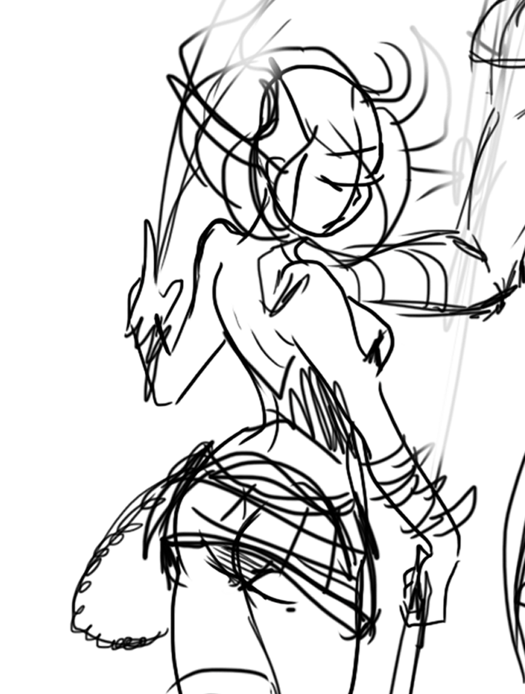

Phuse Morken
The vagrant deserter| Phuse Morken | |
|---|---|
|  | |
| Age | 348 |
| Race | Morken (former Shianne) |
| Gender | Female |
| Archetype | ESFP |
| Location | Irvine Castle Town |
| Birthplace | Shiandaea |
Phuse is a long-living Morken, known for ages and subject of study for some. Spends most of her time wandering and traveling by Millward, desperately trying to soothe the boredom of her artificially extended life, constantly seeking pleasure, and some reminders that even if her body doesn't say so, she still lives.
Lore
Early-life as Shianne
Formerly knwon as Phuse Aldrienna within the Shianne community she lived in, Phuse had two siblings: Reckna and Alesi, both respectively older. Reckna worked for their parents trading their goods, their father was a huntsman and crafter, that provided some of the food and dressware of the community. Alesi helped their mother with household and assisted with the father's work. And Phuse, went off with her fater on the hunts, she wasn't very fond of long-range weapons but was very skilled with polearms and blades, which was very useful when they were caught by some fast animal.
From 20 to 40 years old, which is still a teenager for the Shiannes, Phuse spent part of her time as an entertainer at events at the community, the Shiandaea community was very festive, and mostly anything was a reason to celebration. However as time passes, the "foreign ones" as they called the expanding communities of Hanshas (the most unexceptional yet very versatile race of all, which ended up populating most of Nitera) began to approach too much the outskirts of Shianne cities. This started to redicrect their priorities and eventually they had to call hunters for military duty, during the hunts, Phuse and her father also did the job of patroling the perimiter of the village.
Family matters
Phuse and her siblings were born in a family that followed the ancient and traditional branch of the Shiannes religion, which believes that Shaardemi (evolutional variation of the Shianne species, whith bigger brains, but fragile bodies, bounding extinction and widely protected by Shiannes nowdays.) were reincarnation of Shiannes that passed away through a ritual where the oldest of the sons from a family which achieves certain social status (by electing na Elder, or receive any kind of notability endorsement from one) must volunteer to participate as they celebrate a birthday in the wanging phase of Delchroma. There are no implications if one does not volunteer, but since Shaardemi are seen as "landbound gods" and a notorious source of spiritual guidance, most of families do want to leave one of theirs to thrive as an spiritual icon.
At that time, around [[-380 year zero || placeholder date]], due to the complex and slow Shaardemi breeding process, some communities progressively were less interested in offering their sons or theirselves to the nature, for reasons ranging from the need of people to take care of the rising demmand of work at the Shianne cities to the recurrent conflicts as the Hanshas advanced into their lands to farm and explore natural resources, or even pure disbelief on the teltale stories of soul ascencion. That was the case of Phuse, but it was not the case of the massive majority of the Shiannes living at Shiandaea at that time, such thoughts were not seen with good eyes and Phuse was quite known as the rebel kid for that, rendering her entire reputation from the past worth nothing.
Phuse not only did not believe on these myths, but she also disliked the way her family raised her sister Alesi to be offered as a sacrifice when the time had come, Alesi indeed believed that this was a the best way to thank the spirits for the prosperity of their family, she was seemingly convinced by their family that that was the right thing to do. Reckna was neutral about all that, he didn't like the idea, but respected the Alesi's decision. At Alesi's 112'th birthday the ritual was set up for the end of the day, with celebration and farewells. Phuse begged to her sister to give up on that idea but she did not step back, and the ritual was carried.
Phuse had a strong link with their siblings, and losing one of them for some stupid tradition put her in rage, she left the village the same day, telling no one where she was going.
On Irvine
After some days wandering through the forests and highlands, she was found by a caravan of Hansha settlers, that took her with them and accepted to have her around in exchange of her hunting skills. There she found herself in another family, much more ambitious and open-minded that the ones of her homeland.
After 20 years, she've seen what started as a camp at the end of the [?river] become a full fledged port town. Such demonstration of evolution made her wonder how such short-lived weaklings could have a much more advanced way of living than her alikes. After so many time there, she embarks on a travel to meet their capital, at the other end of the river, atop an ancient volcano, advised to hide her Shianne traits from the people from the capital, and she knew exactly why.
Phuse did not last long undercover at the capital, people were smart, mainly the townguards, that took her under arrest for believing her to be a spy. At the capital's castle, she was questioned by the Queen Louise Harpshire herself. She then explained her story and asked for asylum amongst the Hanshas. Which was partially declined as she could get yet again in trouble, so Queen Louise hosted her in the dependencies of the castle, where she would be either protected from the people, and constantly under her watch, the Queen was benevolent, but not fool. Except that the High counselor thought the opposite, and that the Queen was too naive to rule the nation during such delicate conflicts period.
Wartime
As the civil war of Irvine breaks out, Phuse is still living in the castle's complex, that was a city per se, hosting families of aristocrats, knights and merchants. The reasons for the internal conflicts were triggered by rumours of an takeover of Shiannes on their hub on the end of the river that flows down the volcano. As soon as Phuse knew about such rumours, she knew that it was about that small town she has been living for the past years.
Immediately after the spread of the rumours, information that her have been on that town just months before came into the High counselor, that was sure that Phuse was a spy. Phuse was then captured and held prisoner. Which just intensified the anger she had for their own people. That ends up being a key point in Irvine's history: the High counselor promotes a coup to take the Queen out of her role, and succeeds.
After just a few months, she eavesdrops into a conversation between guards, mentioning the use of Shiannes fallen in combat as test subjects for a weponization process that the local alchemists called "Project Morken". Phuse succeeded in communicating her interest on that project and said that would fight for them and even volunteered to be subject for testing.
Phuse then was exposed to a Silenyte-Carbon toxin and eventually suffered the effects of the experiment. Phuse Aldrienna officialy deceased on that day, months later giving birth to her new self, baptized Phuse Morken, regarding the project's name.
The Project Morken was highly experimental and vaguely known to reanimate Shianne bodies after a handful of time of exposition, and due to specific genetic configuration, only Shiannes could be used for this purpose. This transition between life and "death" confirmed her beliefs that death is true end, and that her sister had died for nothing. Further experiments in bringing other corpses into living shown that the brain damage sustained on the dead was exponentially proportional to the time elapsed between death-time and the beginning of the exposure to the substance that would bring them back.
Having that on mind, Phuse fought with all of her anger against her own kind, being the only one with the brain mostly intact, she kept her pristine hunting skills and used it in combat. Her performance in the battlefield grants her a high rank within the military, and is gifted with one of the weapons of the Forbidden Royal Archive: the Scythe of Irvine, which within the years had become her flagship, and stories about the one Lady of the Scythe spreaded quickly, eventually reaching the far away village where Phuse grew up.
As the advance of Irvinian forces goes, Phuse's unit ends up being directed to her former village, the first thing she has on her mind is to try to find her brother, to spare him and avoid him to be found first and eventually killed. As she finds him, they have a long and deep conversation, which leads Phuse to rethink her doings.
The fight on the village is a loss for both sides, since it was a village of mostly hunters, the battle was tough and both sides ended up in bad shape. Phuse returned with Reckna to the capital, and there he also volunteered for being converted into a Morken, all as part of a plot with Phuse to revert the state of war.
Within a year, Reckna finally earns trust of the usurper King, former Counselor, and gets the role of Counselor for himself, while Phuse leads one of the Irvinian Legions. They both achieve their plots and while Reckna secretly frees Queen Louise from imprisonment, Phuse gathers her men to an campaign into the very Irvine Castle, everything properly planned and made up to make the King believe it is some routine gathering.
They both succeed, and the usurper King is taken down, putting the Queen on power again, that within some years, succeeds in ceasing the reckless expansion, and the war, completely.
A few years later, Queen Louise resigns, and decides to lead a caravan to settle in the northern penninsula, near where Phuse and Reckna's village once was. So they could help with the reconstruction of the village and regaining the trust of the remaining Shiannes, that were few. Reckna decided to stay at Irvine to be sure no other war is held there, and Phuse had no choice but to stay too.
Life as a Morken
As years passed after the war, conflicts extinguish, and population and technology grows. Phuse sees, with all her longevity, generations of friends and acquaintances pass by, both Shianne and Hansha, soon she gets accustomed in having people around her come and go. And she seeks every day for brand new ways to entertain herself. Even though she lives with her brother at the Irvine Castle Town, she oftenly wanders around Millward, and when authorized, through the world.
Personality
Phuse is a very easygoing girl. Yet, too many years of life rendered her quite cold regarding others lifes, but in constant need of "warmth" from others lives. One of the things she misses the most is the lack of feelings like the adrenaline rush on her body during the hunts, feeling her heartbeat responding differently for stuff, her soul is there, but she feels and acknowledges her body is dead, artificially being held by energy generated by the disturbances of Silenyte radiation's decay, that could last hundreds of years more.
One of Phuse's most prominient traits is her intense aquired lust, she've been addicted to the sensation provided by the electromagnetic reaction of natural Carbon of living bodies with the Silenyte Carbon of her body, which causes an unutterable vibration of her cells that can be felt clearly. That is the closest of living as she can get, and also much better than what a living person can actually experience, and these are her reasons for such uncommon, and, most of the times, inadequate behaviour.
Even though she does not have a heart beating, or have chemical responses to feelings, her brain still works properly, and despites her coldness for the short lived ones, she has some sense of empathy on a macro scale, all that thanks to the influence of Reckna on her through the years.
Phuse is energetic, playful and extrovert. Usually gets in trouble for saying whatever she wants, it is not common to have her joining in fights all around, and she have been even at the jail sometimes for her misbehaviour. But she doesn't changes, and doesnt care.